Crédits des images et des écussons
150 portraits de joueurs du jeu, 15 portraits de légendes et 102 écussons de clubs sont consignés dans les manifestes.
Portraits des joueurs
Les auteurs, URL de source et licences indiqués dans le tableau proviennent du manifeste des portraits. Les images peuvent aussi rester soumises au droit à l’image des personnes représentées.
| # | Photo | Joueur / club dans le jeu | Crédit | Licence | Source |
|---|---|---|---|---|---|
| 001 | 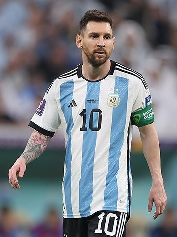 | Lionel Messi Inter Miami | Tasnim News Agency | CC BY 4.0 | Fichier source File:Lionel-Messi-Argentina-2022-FIFA-World-Cup (cropped).jpg |
| 002 | 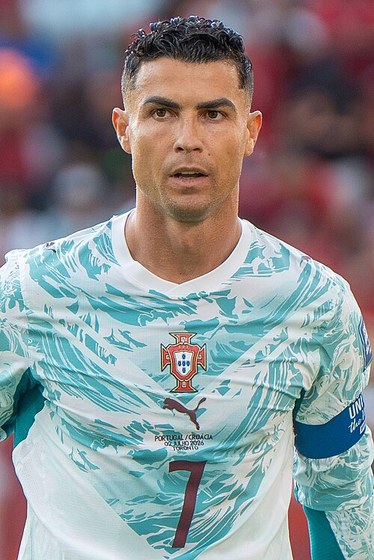 | Cristiano Ronaldo Al Nassr | Bryan Berlin / WikiPortraits | CC BY-SA 4.0 | Fichier source File:Cristiano Ronaldo Croatia v Portugal 2 July 2026-075 (cropped).jpg |
| 003 | 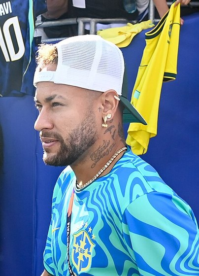 | Neymar Santos | Own work | CC BY-SA 4.0 | Fichier source File:Neymar at 2026 FIFA World Cup by YantsImages (cropped).jpg |
| 004 | 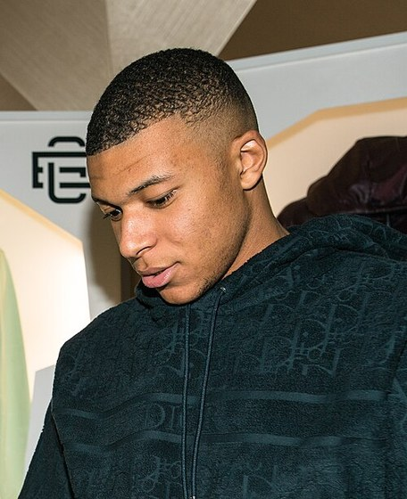 | Kylian Mbappé Real Madrid | Own work | CC BY-SA 4.0 | Fichier source File:Kylian Mbappé (cropped).jpg |
| 005 | 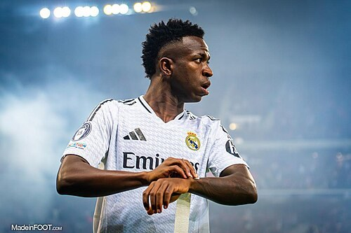 | Vinícius Júnior Real Madrid | madrid | CC0 | Fichier source File:Vinícius Júnior - Real Madrid CF (2024-25).jpg |
| 006 | 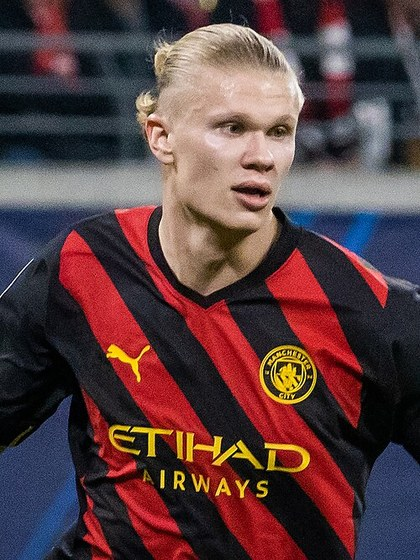 | Erling Haaland Manchester City | Jacek.stanislawek | CC BY-SA 4.0 | Fichier source File:Erling Haaland 2023 (cropped).jpg |
| 007 | 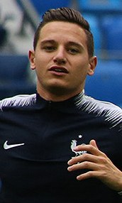 | Florian Thauvin RC Lens | https://www.soccer.ru/galery/1057186/photo/735770 | CC BY-SA 3.0 | Fichier source File:Florian Thauvin 2018 (cropped).jpg |
| 008 | 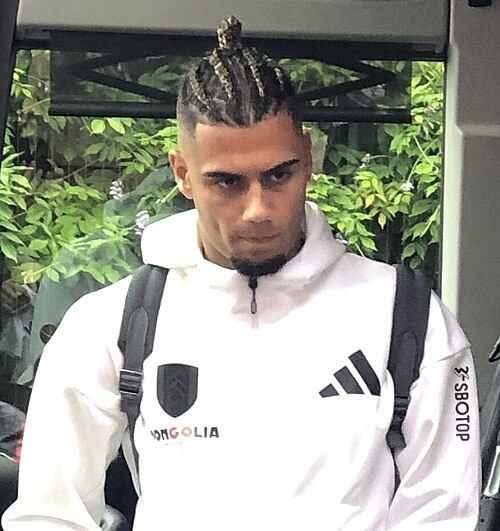 | Andreas Pereira Palmeiras | Own work | CC0 | Fichier source File:Andreas Pereira 24082024 (cropped).jpg |
| 009 | 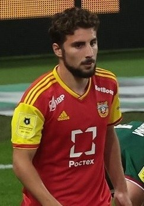 | Zuriko Davitashvili AS Saint-Étienne | https://www.soccer.ru/galery/1270126/photo/913857 | CC BY-SA 3.0 | Fichier source File:Zuriko Davitashvili 2021 (cropped).jpg |
| 010 | 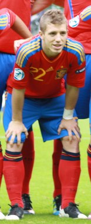 | Iker Muniain San Lorenzo | https://www.flickr.com/photos/60189863@N03/5861029410/in/photostream | CC BY 2.0 | Fichier source File:Iker Muniain.jpg |
| 011 | 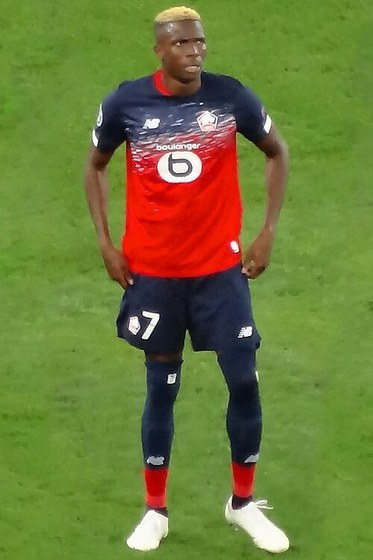 | Victor Osimhen Galatasaray | Own work | CC BY-SA 4.0 | Fichier source File:Victor Osimhen (LOSC) (cropped).jpg |
| 012 | 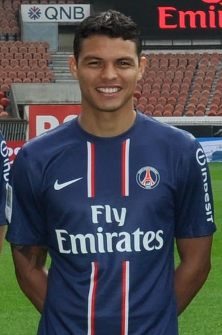 | Thiago Silva Fluminense | Flickr : Javier Pastore, Thiago Silvar, Zlatan Ibrahimovic, Blaise Matuidi entourés des hôtesses Emirates | CC BY 2.0 | Fichier source File:Thiago Silva (cropped).jpg |
| 013 | 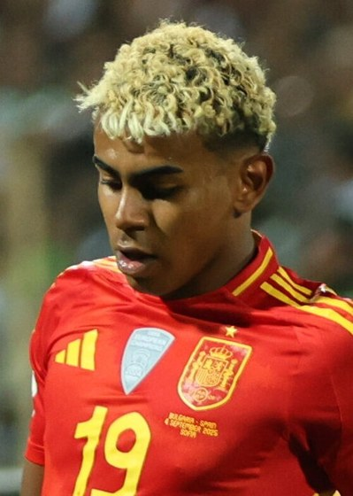 | Lamine Yamal FC Barcelone | Own work | CC BY 4.0 | Fichier source File:Lamine Yamal in 2025 (cropped).jpg |
| 014 | 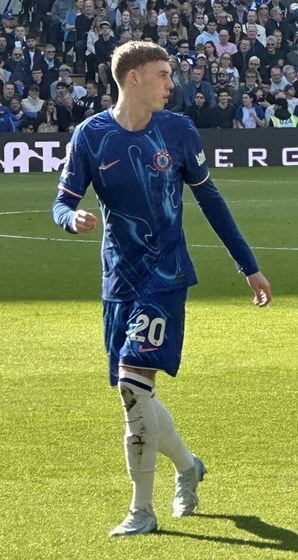 | Cole Palmer Chelsea | Own work | CC BY 4.0 | Fichier source File:Cole Palmer (Chelsea) vs Leicester City, 9th March 2025 (cropped).jpg |
| 015 | 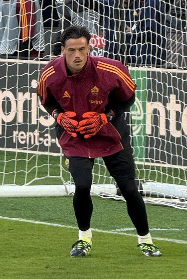 | Mile Svilar AS Rome | LittleWhites | CC BY-SA 4.0 | Fichier source File:Mile Svilar (cropped).jpeg |
| 016 | 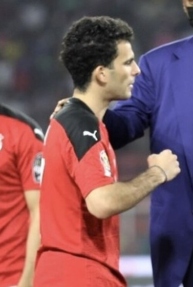 | Ahmed Sayed Zizo Al Ahly | Own work | CC BY 4.0 | Fichier source File:Ahmed Sayed (Zizo).jpg |
| 017 | 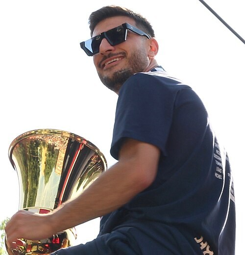 | Riccardo Orsolini Bologne | https://www.flickr.com/photos/184568471@N07/54545125423/in/dateposted-public/ | CC BY-SA 4.0 | Fichier source File:Riccardo Orsolini.jpg |
| 018 | 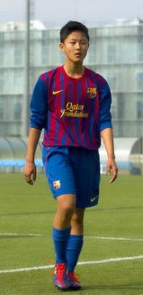 | Lee Seung-woo Jeonbuk Hyundai Motors | Own work | CC BY-SA 3.0 | Fichier source File:Lee Seung Woo.jpg |
| 019 | 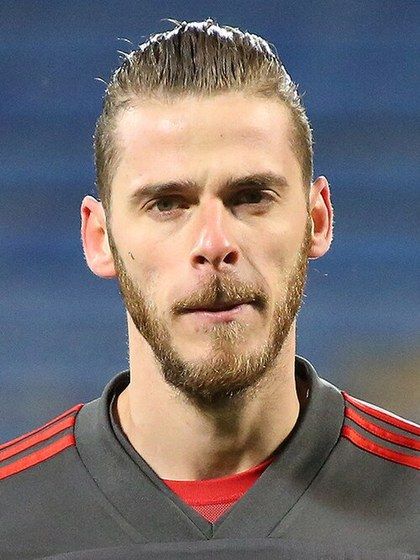 | David de Gea Fiorentina | https://www.soccer.ru/galery/1022771/photo/691822 | CC BY-SA 3.0 | Fichier source File:David de Gea 2017 (cropped).jpg |
| 020 | 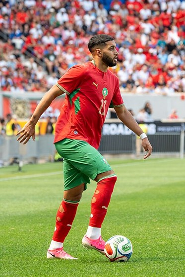 | Ismael Saibari PSV Eindhoven | Own work | CC BY-SA 4.0 | Fichier source File:Ismael Saibari Morocco v Norway 7 June 2026-69.jpg |
| 021 | 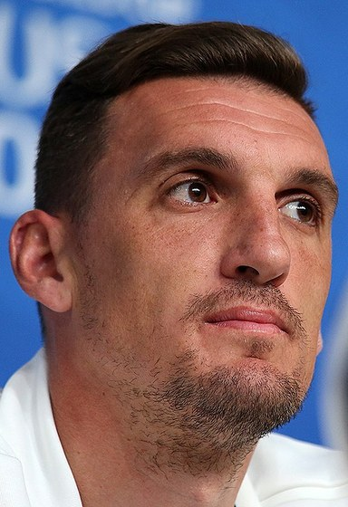 | Franco Armani River Plate | https://www.soccer.ru/galery/1055212/photo/733010 | CC BY-SA 3.0 | Fichier source File:Franco Armani 2018.jpg |
| 022 | 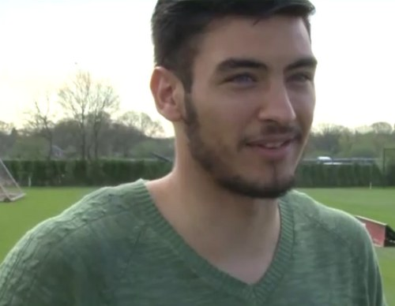 | Paulo Gazzaniga Girona | Own work | CC BY-SA 4.0 | Fichier source File:PauloGazzaniga.png |
| 023 | 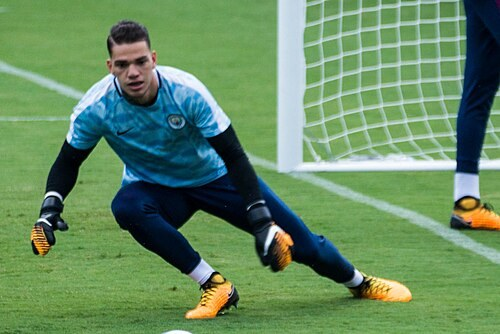 | Ederson Fenerbahçe | Ederson Moraes | CC BY 2.0 | Fichier source File:Ederson Moraes (36243872090) (cropped).jpg |
| 024 | 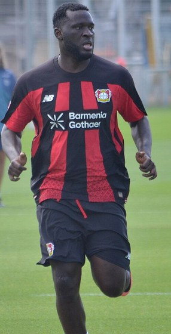 | Victor Boniface Werder Brême | Own work | CC BY 4.0 | Fichier source File:2026-07-21 Victor Boniface.jpg |
| 025 | 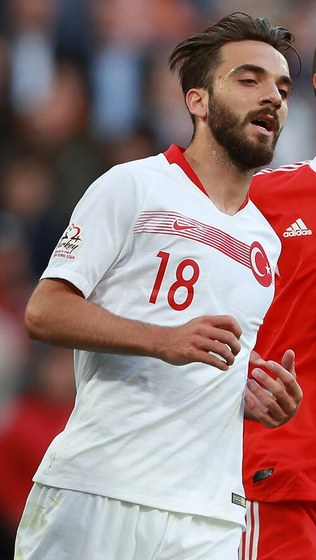 | Kenan Karaman Schalke 04 | https://www.soccer.ru/galery/1052430/photo/729069 | CC BY-SA 3.0 | Fichier source File:Kenan Karaman.jpg |
| 026 | 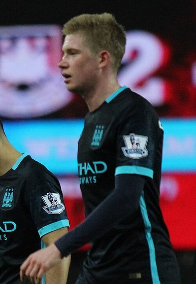 | Kevin De Bruyne Naples | West Ham United Vs Manchester City | CC BY 2.0 | Fichier source File:Kevin De Bruyne (24640482031) (cropped).jpg |
| 027 | 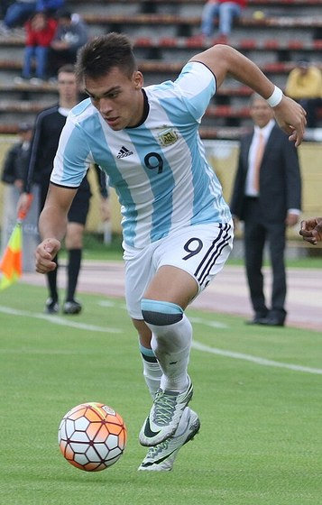 | Lautaro Martínez Inter | ARGENTINA vs COLOMBIA SUDAMERICANO SUB 20 | CC BY-SA 2.0 | Fichier source File:Lautaro Martínez (cropped).jpg |
| 028 | 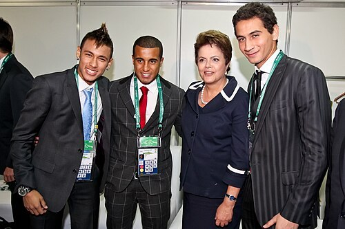 | Lucas Moura São Paulo | Rio de Janeiro - RJ Uploaded by Kafuffle | CC BY-SA 2.0 | Fichier source File:Neymar, Lucas Moura, Dilma Rousseff, Ganso.jpg |
| 029 | 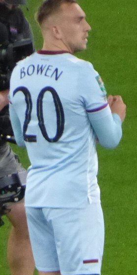 | Jarrod Bowen West Ham United | Own work | CC BY-SA 4.0 | Fichier source File:Jarrod Bowen (cropped).jpg |
| 030 | 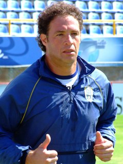 | Adrián Martínez Racing Club | Own work | CC BY-SA 4.0 | Fichier source File:Adrian Martinez.jpg |
| 031 | 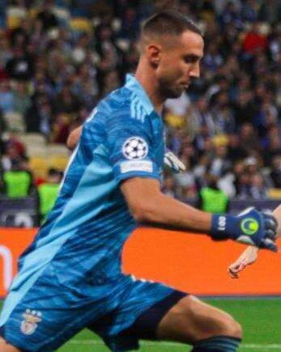 | Odysseas Vlachodimos Séville FC | ТОВ "Динамоманія" | CC BY-SA 4.0 | Fichier source File:Матч «Динамо» - «Бенфіка» 0-0. 14 вересня 2021 року — 1271559 (Odysseas Vlachodimos).jpg |
| 032 | 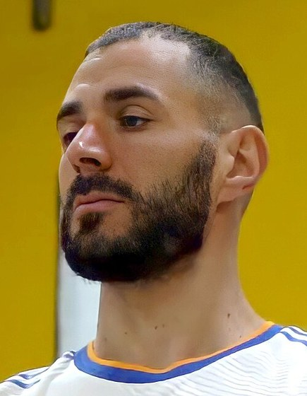 | Karim Benzema Al Ittihad | NEW REAL MADRID HOME KIT 21/22 | CC BY 3.0 | Fichier source File:Karim Benzema wearing Real Madrid home kit 2021-2022 (cropped).jpg |
| 033 | 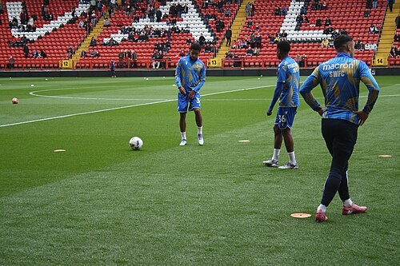 | Bruno Fernandes Manchester United | Own work | CC0 | Fichier source File:Yisa Alao, Bruno Fernandes and Bailey Cadamarteri 18102025 (1).jpg |
| 034 | 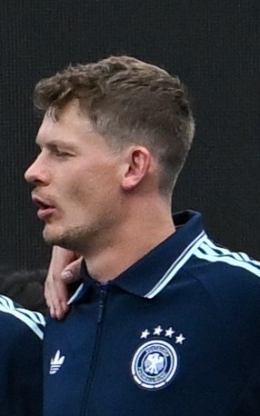 | Alexander Nübel VfB Stuttgart | Own work | CC BY-SA 4.0 | Fichier source File:Team Germany, Ecuador v Germany at 2026 Fifa World Cup by YantsImages 04 Alexander Nübel.jpg |
| 035 | 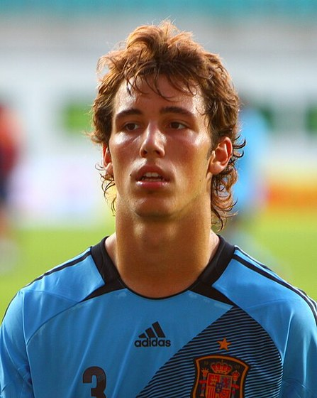 | Alejandro Grimaldo Bayer Leverkusen | U-19 Portugal vs Spain. | CC BY 2.0 | Fichier source File:Alejandro Grimaldo (5) (cropped).jpg |
| 036 | 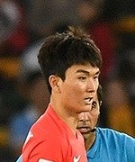 | Hwang In-beom Feyenoord | Fars Media Corporation | CC BY 4.0 | Fichier source File:Hwang In-beom in Asian Cup6 (cropped).jpg |
| 037 | 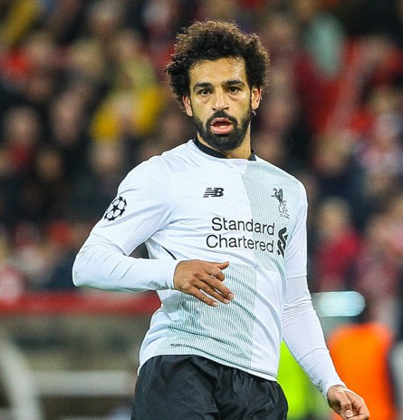 | Mohamed Salah Liverpool | https://www.soccer0010.com/galery/1013448/photo/673353 | CC BY-SA 3.0 | Fichier source File:Mohamed Salah 2017 (cropped).jpg |
| 038 | 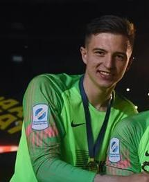 | Anatoliy Trubin Benfica | Football.ua | CC BY-SA 3.0 | Fichier source File:Anatoliy Trubin.jpg |
| 039 | 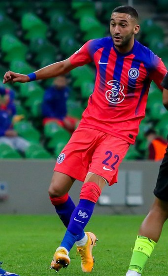 | Hakim Ziyech Wydad AC | soccer.ru | CC BY-SA 3.0 | Fichier source File:Hakim Ziyech 2020.jpg |
| 040 | 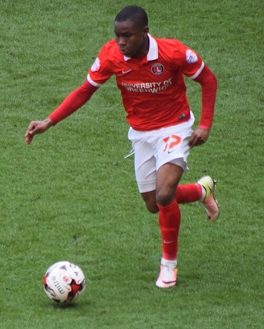 | Ademola Lookman Atalanta | Own work | CC BY-SA 4.0 | Fichier source File:Ademola Lookman, Charlton (cropped).jpg |
| 041 | 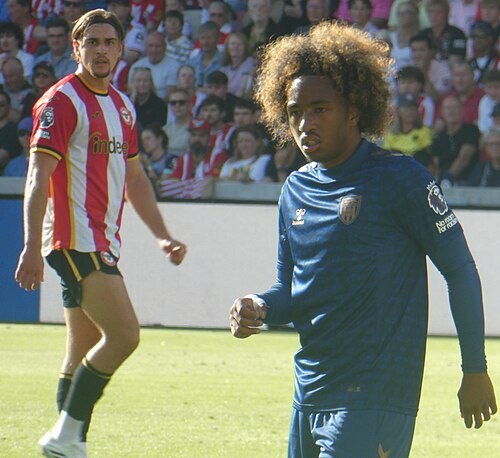 | Malick Fofana Olympique Lyonnais | Own work | CC0 | Fichier source File:Yehor Yarmolyuk and Malick Fofana 05092026 (1).jpg |
| 042 | 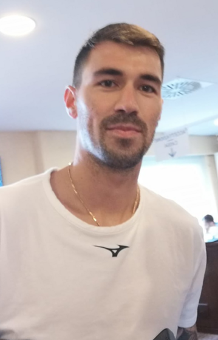 | Alessio Romagnoli Lazio | Own work | CC BY-SA 4.0 | Fichier source File:Alessio Romagnoli Luglio 2022.png |
| 043 | 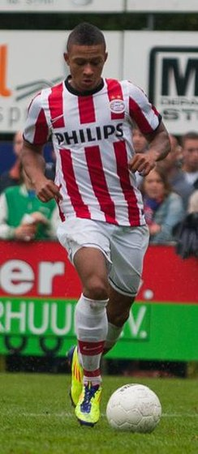 | Memphis Depay Corinthians | Flickr : ALG_0866 (Large) | CC BY 2.0 | Fichier source File:Memphis Depay (cropped).jpg |
| 044 | 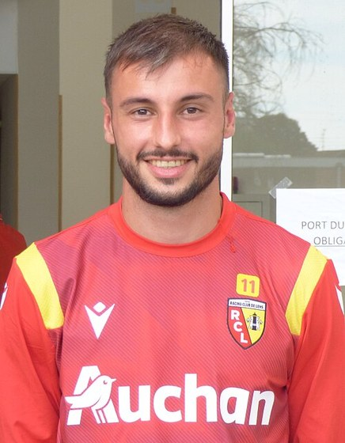 | Jonathan Clauss OGC Nice | Own work | CC0 | Fichier source File:Jonathan Clauss RC Lens 2020.jpeg |
| 045 | 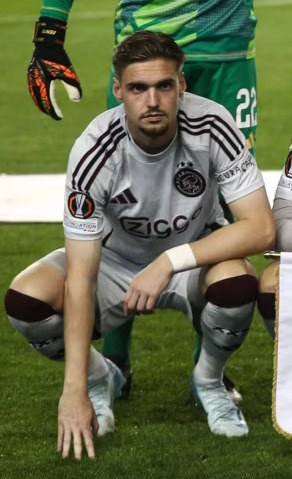 | Kenneth Taylor Ajax | “Qarabağ” klubu Avropa Liqası futbol turniri çərçivəsində “Ayaks” klubu ilə qarşılaşıb | Public domain | Fichier source File:Qarabağ vs Ajax (24.10.2024) (4) (Kenneth Taylor).jpg |
| 046 | 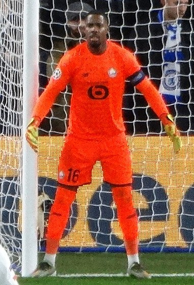 | Mike Maignan AC Milan | Chelsea 2 Lille 1 | CC BY-SA 2.0 | Fichier source File:Chelsea 2 Lille 1 (49202948728) Mike Maignan.jpg |
| 047 | 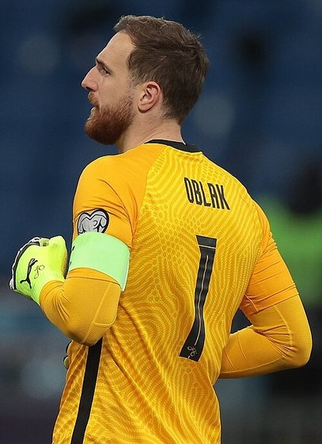 | Jan Oblak Atlético de Madrid | soccer.ru | CC BY-SA 3.0 | Fichier source File:Jan Oblak 2021.jpg |
| 048 | 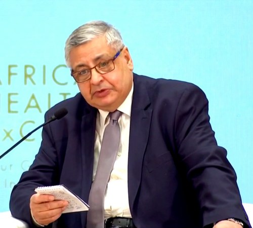 | Mohamed Awad Zamalek | YouTube : https://www.youtube.com/watch?v=8vKrcFRFMn0 – View/save archived versions on archive.org | CC BY 3.0 | Fichier source File:Mohamed Awad Tageddin.png |
| 049 | 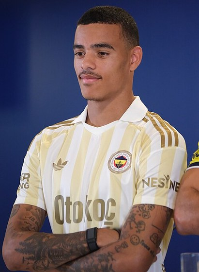 | Mason Greenwood Olympique de Marseille | Own work | CC BY 4.0 | Fichier source File:Mason Greenwood Fenerbahçe 20260717 (1) (cropped).jpg |
| 050 | 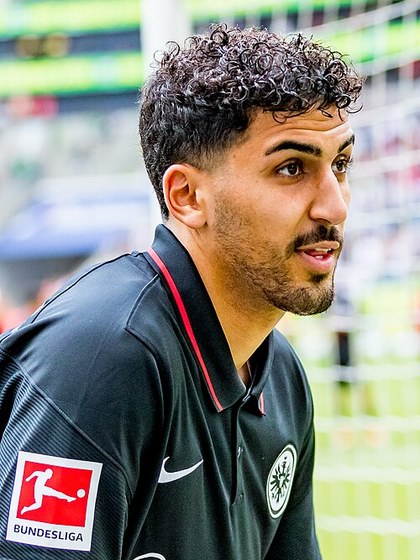 | Aymen Barkok Raja Club Athletic | Sven Mandel | CC BY-SA 4.0 | Fichier source File:2022128173304 2022-05-08 Fussball Eintracht Frankfurt vs Borussia Mönchengladbach - Sven - 1D X MK II - 0504 - AK8I7239 (Aymen Barkok cropped).jpg |
| 051 | Alan Patrick Internacional | https://www.youtube.com/watch?v=YvQZhcJd_II | CC BY 3.0 | Fichier source File:Alan Patrick at Internacional in 2023.png | |
| 052 | Diogo Costa FC Porto | Own work | CC BY-SA 4.0 | Fichier source File:Diogo Costa September 2025 (cropped).jpg | |
| 053 | Sven Mijnans AZ Alkmaar | https://www.flickr.com/photos/131306819@N08/53717680783/ | CC BY 2.0 | Fichier source File:Sven Mijnans.jpg | |
| 054 | Daniel Heuer Fernandes Hambourg SV | Own work | CC BY-SA 4.0 | Fichier source File:2025-05-16 Hamburger SV Daniel Heuer Fernandes.jpg | |
| 055 | Brice Samba Stade Rennais | Bryan Berlin / WikiPortraits | CC BY-SA 4.0 | Fichier source File:Brice Samba France v Senegal 16 June 2026-280 (cropped).jpg | |
| 056 | Cristian Romero Tottenham Hotspur | ARGENTINA vs COLOMBIA SUDAMERICANO SUB 20 | CC BY-SA 2.0 | Fichier source File:Cristian Gabriel Romero (cropped).jpg | |
| 057 | Harry Kane Bayern Munich | https://www.flickr.com/photos/49707497@N06/53248476300/ | CC BY 2.0 | Fichier source File:Harry Kane 2023 (cropped).jpg | |
| 058 | André Onana Trabzonspor | Ajax Open Training | CC BY-SA 2.0 | Fichier source File:Andre Onana 2016 (cropped).jpg | |
| 059 | Orkun Kökçü Beşiktaş | Zafer | CC BY 4.0 | Fichier source File:Orkun Kökçü 20260121 (2) - cropped version.jpg | |
| 060 | Antony Real Betis | Antony In Betis 23rd November 2025.png | CC BY-SA 4.0 | Fichier source File:Antony In Betis 23rd November 2025.png 2 (cropped).png | |
| 061 | Dani Parejo Villarreal | This file was derived from: València-Rayo - 28.jpeg : | CC BY-SA 3.0 | Fichier source File:Daniel Parejo.jpg | |
| 062 | Iliman Ndiaye Everton | Own work | CC0 | Fichier source File:Fulham v Everton 10052025 (12) (Iliman Ndiaye).jpg | |
| 063 | Gustavo Gómez Palmeiras | Own work | CC BY-SA 4.0 | Fichier source File:Gustavo-gomez-palmeiras-wikipedia (cropped).png | |
| 064 | José Gayà Valence | Valencia 3-1 Eibar | CC BY 2.0 | Fichier source File:Jose Gaya 2015 (cropped).jpg | |
| 065 | Lucas Ribeiro Mamelodi Sundowns | YouTube : https://www.youtube.com/watch?v=9kLD1VDrogs – View/save archived versions on archive.org | CC BY 3.0 | Fichier source File:LucasRibeiro.png | |
| 066 | Lucas Stassin AS Saint-Étienne | Own work | CC BY-SA 4.0 | Fichier source File:Lucas Stassin USMNT v Belgium Mar 28 2026-33 (cropped).jpg | |
| 067 | Leroy Sané Galatasaray | Bryan Berlin / WikiPortraits | CC BY-SA 4.0 | Fichier source File:Leroy Sane Ecuador v Germany 25 June 2026-004 (cropped).jpg | |
| 068 | Pedri FC Barcelone | Bryan Berlin | CC BY-SA 4.0 | Fichier source File:Pedri Argentina v Spain 19 July 2026-197 (cropped).jpg | |
| 069 | Moisés Caicedo Chelsea | https://www.flickr.com/photos/37972999@N07/52252699949/ | CC BY 2.0 | Fichier source File:Moises Caicedo 2022 (cropped).jpg | |
| 070 | Paulo Dybala AS Rome | Werner100359 | CC BY-SA 4.0 | Fichier source File:FC Salzburg gegen AS Roma (UEFA Euroleague play-off, 2023-02-16) 38 - Paulo Dybala (cropped).jpg | |
| 071 | Emam Ashour Al Ahly | Own work | CC BY 4.0 | Fichier source File:Emam Ashour (cropped).jpg | |
| 072 | Jhon Lucumí Bologne | Own work | CC BY-SA 4.0 | Fichier source File:Jhon Lucumí September 2019.jpg | |
| 073 | Jerdy Schouten PSV Eindhoven | wikiportret.nl | CC BY-SA 4.0 | Fichier source File:Jerdy schouten-1772637173 (cropped).JPG | |
| 074 | Lucas Martínez Quarta River Plate | Own work | CC BY-SA 3.0 | Fichier source File:Lucas Martínez Quarta 2022.jpg | |
| 075 | Vitinha Paris Saint-Germain | "Euro2024: Vitinha assume que as "expectativas estão altas"" (1m 25s) | CC BY 3.0 | Fichier source File:Vitinha, Euro2024 (Agência Lusa).png | |
| 076 | Rodri Manchester City | Own work | CC BY-SA 4.0 | Fichier source File:RODRI - SWE vs ESP - UEFA EURO 2020 QUALIFIERS - 2019.10.15 (cropped).jpg | |
| 077 | Milan Škriniar Fenerbahçe | Own work | CC BY-SA 4.0 | Fichier source File:Milan Škriniar 37 Fenerbahçe 20260805 (8) (cropped).JPG | |
| 078 | Willi Orbán RB Leipzig | Own work | CC BY-SA 4.0 | Fichier source File:Willi Orban am Trainingszentrum RB Leipzig am Cottaweg (cropped).png | |
| 079 | Scott McTominay Naples | Own work | CC BY-SA 4.0 | Fichier source File:Scott McTominay 2021.jpg | |
| 080 | Oscar São Paulo | Flickr : Chelsea and Brazil midfielder Oscar | CC BY 2.0 | Fichier source File:Oscar with Chelsea (cropped).jpg | |
| 081 | Arthur Theate Eintracht Francfort | Own work | CC BY-SA 4.0 | Fichier source File:Arthur Theate Nations League Italy 2021.jpg | |
| 082 | Lucas Paquetá West Ham United | Own work | CC BY-SA 4.0 | Fichier source File:Lucas Paquetá of West Ham (cropped).jpeg | |
| 083 | Gabriel Arias Racing Club | Gabriel Arias | CC BY 2.0 | Fichier source File:Gabriel Arias (52648982202) (cropped).jpg | |
| 084 | Rubén Vargas Séville FC | Archivo fotográfico de la Biblioteca Nacional del Perú. | Public domain | Fichier source File:Ruben Vargas Ugarte.jpg | |
| 085 | Álex Remiro Real Sociedad | IMG_2260 | CC BY-SA 2.0 | Fichier source File:Alex Remiro.jpg | |
| 086 | Moussa Diaby Al Ittihad | Own work | CC BY-SA 4.0 | Fichier source File:Moussa Diaby, 2022-07-31, Saisoneröffnung Bayer 04, Leverkusen (1) (cropped).jpg | |
| 087 | Yassine Bounou Al Hilal | Photo de Laloumance , transmise à l’utilisateur A.Nawfel ; autorisation envoyée à permissions-commons@wikimedia.org le 2025-09-10. | CC BY 4.0 | Fichier source File:Yassine Bounou - Maroc vs Niger (cropped).jpg | |
| 088 | Bryan Mbeumo Manchester United | This image has been extracted from another file | CC BY-SA 4.0 | Fichier source File:Bryan Mbeumo, Brentford F.C. footballer, July 2021.jpg | |
| 089 | Edmond Tapsoba Bayer Leverkusen | Own work | CC BY-SA 4.0 | Fichier source File:Edmond Tapsoba, 2022-07-31, Saisoneröffnung Bayer 04, Leverkusen (1) (cropped).jpg | |
| 090 | Kenan Yıldız Juventus | Own work | CC0 | Fichier source File:Kenan Yıldız.jpg | |
| 091 | Alisson Becker Liverpool | Bryan Berlin / WikiPortraits | CC BY-SA 4.0 | Fichier source File:Alisson Becker Brazil V Morocco 13 June 2026-117 (cropped).jpg | |
| 092 | Vangelis Pavlidis Benfica | https://www.flickr.com/photos/131306819@N08/53717680858/ | CC BY 2.0 | Fichier source File:Vangelis Pavlidis (cropped).jpg | |
| 093 | Wissam Ben Yedder Wydad AC | https://amnphoto.myportfolio.com/ | CC BY-SA 4.0 | Fichier source File:Wissam Ben Yedder AS Monaco capitain (20-12-2023) (cropped).jpg | |
| 094 | Charles De Ketelaere Atalanta | Own work | CC BY-SA 4.0 | Fichier source File:Charles De Ketelaere USMNT v Belgium Mar 28 2026-76 (cropped).jpg | |
| 095 | Benjamin André LOSC Lille | Own work | CC BY-SA 3.0 | Fichier source File:Rennes - Orléans 20140706 - Benjamin André et Tiémoué Bakayoko.JPG | |
| 096 | Guilherme Santos | Own work | CC BY-SA 3.0 | Fichier source File:Guilherme DE SOUZA - CHOCO (cropped).jpg | |
| 097 | Serhou Guirassy Borussia Dortmund | https://www.flickr.com/photos/196250323@N06/53464614235/ | Public domain | Fichier source File:Serhou Guirassy 2024 (cropped).jpg | |
| 098 | Josip Šutalo Ajax | “Qarabağ” klubu Avropa Liqası futbol turniri çərçivəsində “Ayaks” klubu ilə qarşılaşıb | Public domain | Fichier source File:Qarabağ vs Ajax (24.10.2024) (4) (Josip Šutalo).jpg | |
| 099 | Martin Braithwaite Grêmio | SM7_1726 | CC BY 2.0 | Fichier source File:Martin Braithwaite Web Summit 2021.jpg | |
| 100 | Julián Álvarez Atlético de Madrid | File:Arg_vs_mex_julianalvarez_moreno_ochoa_y_messi.jpg | CC BY 4.0 | Fichier source File:Arg vs mex julianalvarez moreno ochoa y messi(cropped).jpg | |
| 101 | Sandro Tonali Newcastle United | Own work | CC BY-SA 4.0 | Fichier source File:SandroTonali2022Salzburg.jpg | |
| 102 | Gerónimo Rulli Olympique de Marseille | Bryan Berlin | CC BY-SA 4.0 | Fichier source File:Geronimo Rulli Argentina v Spain 19 July 2026-267 (cropped).jpg | |
| 103 | Vanderson AS Monaco | https://dadosabertos.tse.jus.br/dataset/candidatos-2024 | CC BY 4.0 | Fichier source File:2024 VANDERSON MENDONÇA CANDIDATO VICE-PREFEITO SP SUMARE TSE (250002265039).jpg | |
| 104 | Troy Parrott AZ Alkmaar | YouTube : https://www.youtube.com/watch?v=jSzTZfhMqKk – View/save archived versions on archive.org | CC BY 3.0 | Fichier source File:Troy Parrott 2025.png | |
| 105 | Declan Rice Arsenal | Own work | CC BY-SA 4.0 | Fichier source File:Declan Rice September 2021.jpg | |
| 106 | Arnaud Kalimuendo Stade Rennais | Own work ( Lingua Libre ) | CC BY-SA 4.0 | Fichier source File:LL-Q150 (fra)-WikiLucas00-Arnaud Kalimuendo.wav | |
| 107 | Duván Zapata Turin | Domenico Cucinella | CC BY-SA 4.0 | Fichier source File:Calcio di inizio Lecce Atalanta - Duván Zapata (cropped).jpg | |
| 108 | Morten Hjulmand Sporting CP | Own work | CC BY-SA 4.0 | Fichier source File:Morten Hjulmand, FC Admira Wacker Mödling vs. LASK Linz 2018-08-12.jpg | |
| 109 | Kento Misao Kashima Antlers | Fars Media Corporation | CC BY 4.0 | Fichier source File:Kento Misao.jpg | |
| 110 | Micky van de Ven Tottenham Hotspur | Own work | CC BY-SA 4.0 | Fichier source File:Micky van de Ven FC Salzburg gegen VfL Wolfsburg (CL-Gruppenphase 20. Oktober 2021) 21 (cropped).jpg | |
| 111 | Jamal Musiala Bayern Munich | Self-photographed | CC BY-SA 4.0 | Fichier source File:Jamal Musiala 2022 (cropped).jpg | |
| 112 | Paul Onuachu Trabzonspor | Own work | CC0 | Fichier source File:Paul Onuachu 2025 (cropped).jpg | |
| 113 | Rafa Silva Beşiktaş | RAFA EM ENTREVISTA! | CC BY 3.0 | Fichier source File:Rafa Silva 2020.png | |
| 114 | Isco Real Betis | This file was derived from: Real Madrid vs. Atlético Madrid 28 September 2013 SEt 5.JPG : | CC BY 3.0 | Fichier source File:Isco (cropped).png | |
| 115 | Ayoze Pérez Villarreal | Perez2 | CC0 | Fichier source File:Ayoze Perez 20150710.jpg | |
| 116 | Jorginho Flamengo | https://pic1.fc-zenit.ru/upload/gallery/photo/16928/739044_sPICT.jpg | CC BY-SA 3.0 | Fichier source File:Jorginho, 2021 (cropped).jpg | |
| 117 | Jack Grealish Everton | Self-photographed | CC BY-SA 4.0 | Fichier source File:JACK GREALISH - MANCHESTER CITY vs RB LEIPZIG - UCL 2021 (cropped).jpg | |
| 118 | Joaquín Piquerez Palmeiras | Fars Media Corporation | CC BY 4.0 | Fichier source File:Joaquin-Piquerez-Palmeiras-Mundial-2021.jpg | |
| 119 | İlkay Gündoğan Galatasaray | Own work | CC BY-SA 4.0 | Fichier source File:20180602 FIFA Friendly Match Austria vs. Germany İlkay Gündoğan 850 0728 (cropped).jpg | |
| 120 | Martinelli Fluminense | Own work | CC BY-SA 4.0 | Fichier source File:1 Gabriel Martinelli arsenal 2025 (cropped).jpg | |
| 121 | Raphinha FC Barcelone | https://www.youtube.com/watch?v=fRt7943pUB4 | CC BY 4.0 | Fichier source File:Raphinha (2025) (cropped).png | |
| 122 | Enzo Fernández Chelsea | Bryan Berlin / WikiPortraits | CC BY-SA 4.0 | Fichier source File:Enzo Fernandez Argentina v Egypt 7 July 2026-127 (cropped).jpg | |
| 123 | Mohamed El Shenawy Al Ahly | Bryan Berlin / WikiPortraits | CC BY-SA 4.0 | Fichier source File:Mohamed El Shenawy Argentina v Egypt 7 July 2026-015.jpg | |
| 124 | Lewis Ferguson Bologne | Own work | CC BY-SA 4.0 | Fichier source File:Lewis Ferguson Scotland v Bolivia 6 June 2026-52.jpg | |
| 125 | Albert Guðmundsson Fiorentina | https://www.soccer.ru/galery/1055463/photo/733695 | CC BY-SA 3.0 | Fichier source File:Albert Guðmundsson (cropped).jpg | |
| 126 | Joey Veerman PSV Eindhoven | Joey Veerman en Jack Tuijp | CC BY 2.0 | Fichier source File:Joey Veerman (cropped).jpg | |
| 127 | Iván Martín Girona | Own work | CC BY-SA 4.0 | Fichier source File:Iván Martín Entertainment.jpg | |
| 128 | Achraf Hakimi Paris Saint-Germain | Photo de Laloumance , transmise à l’utilisateur A.Nawfel ; autorisation envoyée à permissions-commons@wikimedia.org le 2025-09-10. | CC BY 4.0 | Fichier source File:Achraf Hakimi vs Niger (cropped).jpg | |
| 129 | Gianluigi Donnarumma Manchester City | Gianluigi Donnarumma | CC BY 2.0 | Fichier source File:Gianluigi Donnarumma (31895135436) (cropped).jpg | |
| 130 | Marco Asensio Fenerbahçe | Flickr | CC BY-SA 2.0 | Fichier source File:Marco Asensio, UEFA U21 2017 c (cropped).jpg | |
| 131 | Romano Schmid Werder Brême | Own work | CC BY-SA 4.0 | Fichier source File:RomanoSchmid.jpg | |
| 132 | David Raum RB Leipzig | Own work | CC BY-SA 4.0 | Fichier source File:David Raum 22 Ecuador v Germany at 2026 Fifa World Cup by YantsImages 01 (cropped).jpg | |
| 133 | Stanislav Lobotka Naples | https://www.soccer.ru/galery/1293136/photo/938945 | CC BY-SA 3.0 | Fichier source File:Stanislav Lobotka 2021.jpg | |
| 134 | Nicolò Barella Inter | Own work | CC BY 4.0 | Fichier source File:Nicolò Barella in 2021 (cropped).jpg | |
| 135 | Rafael São Paulo | Transferred from en.wikipedia to Commons by aaron carass . | CC BY-SA 3.0 | Fichier source File:Rafael Benitez.JPG | |
| 136 | Hugo Larsson Eintracht Francfort | Own work | CC BY-SA 4.0 | Fichier source File:Hugo Larsson (2023).jpg | |
| 137 | Aaron Wan-Bissaka West Ham United | Own work | CC BY-SA 4.0 | Fichier source File:Aaron Wan-Bissaka of West Ham United.jpeg | |
| 138 | Maximiliano Salas Racing Club | Own work | CC BY-SA 4.0 | Fichier source File:Maximiliano Salas Palestino v Deportes Copiapó 20230730 01.jpg | |
| 139 | Chidera Ejuke Séville FC | https://www.soccer.ru/galery/1218982/photo/879920 | CC BY-SA 3.0 | Fichier source File:Chidera Ejuke 2020.jpg | |
| 140 | Takefusa Kubo Real Sociedad | Tasnim News Agency | CC BY 4.0 | Fichier source File:Takefusa Kubo 2022 FIFA World Cup Germany 1–2 Japan - (5).jpg | |
| 141 | N'Golo Kanté Al Ittihad | https://www.soccer.ru/galery/1042075/photo/718659 | CC BY-SA 3.0 | Fichier source File:N'Golo Kanté (cropped).jpg | |
| 142 | João Cancelo Al Hilal | U-19 Portugal vs Spain. Uploaded by Dudek1337 | CC BY 2.0 | Fichier source File:João Cancelo and Gerard Deulofeu (1).jpg | |
| 143 | Matheus Cunha Manchester United | Bryan Berlin / WikiPortraits | CC BY-SA 4.0 | Fichier source File:Matheus Cunha Brazil V Morocco 13 June 2026-178 (cropped).jpg | |
| 144 | Deniz Undav VfB Stuttgart | https://www.flickr.com/photos/37972999@N07/52251448277/ | CC BY 2.0 | Fichier source File:Deniz Undav (middle) at BHA 5 v Espanyol 1 pre season 30 07 2022 39 (cropped).jpg | |
| 145 | Florian Wirtz Liverpool | Own work | CC BY-SA 4.0 | Fichier source File:Florian Wirtz, 2022-07-31, Saisoneröffnung Bayer 04, Leverkusen (1) (cropped).jpg | |
| 146 | António Silva Benfica | This file came from Portal de Dados Abertos do TSE , which licenses its files under the Creative Commons – Attribution 4.0 International license. This file is licensed under the Creative Commons Attribution 4.0 International license. You are free: to share – to copy, distribute and transmit the work to remix – to adapt the work Under the following conditions: attribution – You must give appropriate credit, provide a link to the license, and indicate if changes were made. You may do so in any reasonable manner, but not in any way that suggests the licensor endorses you or your use. https://creativecommons.org/licenses/by/4.0 CC BY 4.0 Creative Commons Attribution 4.0 true true | CC BY 4.0 | Fichier source File:Antônio Carlos Silva em 2022.jpg | |
| 147 | Bart Meijers Wydad AC | Cropped from File:Bart meijers-1489238923.jpg | CC BY 4.0 | Fichier source File:Bart Meijers cropped.jpg | |
| 148 | Moussa Niakhaté Olympique Lyonnais | Bryan Berlin / WikiPortraits | CC BY-SA 4.0 | Fichier source File:Jules Kounde Moussa Niakhate France v Senegal 16 June 2026-317.jpg | |
| 149 | Berke Özer LOSC Lille | beIN SPORTS Türkiye | CC BY 3.0 | Fichier source File:Berke Özer (2021-22 Süper Lig) (cropped).png | |
| 150 | Mattia Zaccagni Lazio | https://www.soccer.ru/galery/1293232/photo/939111 | CC BY-SA 3.0 | Fichier source File:Mattia Zaccagni 2021.jpg |
Légendes
Les fiches des légendes affichent leurs postes et notes de jeu; les sources, auteurs et licences des portraits sont détaillés ci-dessous.
| Photo | Légende | Crédit | Licence | Source / biographie |
|---|---|---|---|---|
| Ronaldo Nazário BU · GEN 99 · Inter Milan · Real Madrid | Photo: Stephen McCarthy / Web Summit via Sportsfile (Commons author: Web Summit), CC BY 2.0; indicate any changes. | CC BY 2.0 | Fichier Commons Biographie | |
| Zinedine Zidane MOC · GEN 99 · Juventus · Real Madrid | Walterlan Papetti, via Wikimedia Commons, CC BY-SA 2.0; provide credit and license link, and indicate any changes. | CC BY-SA 2.0 | Fichier Commons Biographie | |
| Ronaldinho AIL · GEN 98 · FC Barcelona · AC Milan | Marcos Corrêa/PR, ‘Ronaldinho in 2019.jpg’ — CC BY 2.0. | CC BY 2.0 | Fichier Commons Biographie | |
| Diego Maradona MOC · GEN 99 · SSC Napoli · Boca Juniors | Дмитрий Садовников / Wikimedia Commons, CC BY-SA 3.0; include attribution and license link. | CC BY-SA 3.0 | Fichier Commons Biographie | |
| Pelé BU · GEN 99 · Santos FC · New York Cosmos | John Mathew Smith; version Commons retouchée par Joelphotofix; CC BY-SA 2.0. Indiquer les modifications supplémentaires. | CC BY-SA 2.0 | Fichier Commons Biographie | |
| Johan Cruyff MOC · GEN 98 · Ajax · FC Barcelona | Bert Verhoeff / Anefo, Nationaal Archief — CC BY-SA 3.0 NL; crédit et lien de licence requis. | CC BY-SA 3.0 nl | Fichier Commons Biographie | |
| Franz Beckenbauer DC · GEN 98 · FC Bayern München · New York Cosmos | DerFalkVonFreyburg / Wikimedia Commons, CC BY 3.0; credit the author and indicate any modifications. | CC BY 3.0 | Fichier Commons Biographie | |
| Eusébio da Silva Ferreira BU · GEN 97 · SL Benfica | Harry Pot / Anefo, Nationaal Archief — CC BY-SA 3.0 NL; inclure crédit et licence; partager les adaptations sous licence compatible. | CC BY-SA 3.0 nl | Fichier Commons Biographie | |
| Garrincha AIL · GEN 98 · Botafogo | El Gráfico, n° 2233; attribution/source indiquée sur Commons; domaine public revendiqué en Argentine et aux États-Unis. | Public domain | Fichier Commons Biographie | |
| Michel Platini MOC · GEN 97 · Juventus · AS Nancy | Anders Vindegg / Wikimedia Commons, CC BY-SA 2.0; credit the author and link the license. | CC BY-SA 2.0 | Fichier Commons Biographie | |
| George Best AIL · GEN 97 · Manchester United | CC0 1.0 (crédit Bert Verhoeff / Anefo apprécié; pas obligatoire selon CC0). | CC0 | Fichier Commons Biographie | |
| Paolo Maldini DC · GEN 97 · AC Milan | Christophe95 / Wikimedia Commons, CC BY-SA 3.0; attribuer l’auteur et partager les adaptations sous licence identique ou compatible. | CC BY-SA 3.0 | Fichier Commons Biographie | |
| Lev Yashin GB · GEN 99 · Dynamo Moscou | Ron Kroon / Anefo, Nationaal Archief — CC BY-SA 3.0 NL; crédit et lien de licence requis, adaptations sous licence compatible. | CC BY-SA 3.0 nl | Fichier Commons Biographie | |
| Ferenc Puskás BU · GEN 97 · Real Madrid · Budapest Honvéd | FOTO:FORTEPAN / URBÁN TAMÁS; source Fortepan ID 124820; CC BY-SA 3.0; credit and indicate changes. | CC BY-SA 3.0 | Fichier Commons Biographie | |
| Thierry Henry BU · GEN 97 · Arsenal · FC Barcelona | Shay / Wikimedia Commons, CC BY-SA 3.0; indiquer les modifications éventuelles. | CC BY-SA 3.0 | Fichier Commons Biographie |
Écussons des clubs
Les écussons historiques embarqués sont conservés; Estudiantes, Botafogo et Al Ahli sont ajoutés comme fichiers séparés. Les notes indiquent les limites de vérification et les avertissements de marque.
| # | Club | Emplacement | Source | Licence / réserve de droits |
|---|---|---|---|---|
| 1 | TP Mazembe TP Mazembe | Embarqué dans index.html (CRESTS) | Page source Fichier | Droits du logo/écusson à vérifier auprès du club et de la source ok |
| 2 | AS Vita Club Vita Club | Embarqué dans index.html (CRESTS) | Page source Fichier | Droits du logo/écusson à vérifier auprès du club et de la source ok |
| 3 | DCMP Imana DCMP Imana | Embarqué dans index.html (CRESTS) | Page source Fichier | Droits du logo/écusson à vérifier auprès du club et de la source ok |
| 4 | AS Maniema Union Maniema Union | Embarqué dans index.html (CRESTS) | Page source Fichier | Droits du logo/écusson à vérifier auprès du club et de la source ok |
| 5 | FC Saint-Éloi Lupopo Saint-Éloi Lupopo | Embarqué dans index.html (CRESTS) | Page source Fichier | Droits du logo/écusson à vérifier auprès du club et de la source ok |
| 6 | AS Simba Simba Kolwezi | Embarqué dans index.html (CRESTS) | Page source Fichier | Droits du logo/écusson à vérifier auprès du club et de la source ok |
| 7 | CS Don Bosco Don Bosco | Embarqué dans index.html (CRESTS) | Page source Fichier | Droits du logo/écusson à vérifier auprès du club et de la source ok |
| 8 | FC Les Aigles du Congo Les Aigles du Congo | Embarqué dans index.html (CRESTS) | Page source Fichier | Droits du logo/écusson à vérifier auprès du club et de la source ok |
| 9 | AS Dauphin Noir Dauphins Noirs | Embarqué dans index.html (CRESTS) | Page source Fichier | Droits du logo/écusson à vérifier auprès du club et de la source ok |
| 10 | FC Renaissance du Congo FC Renaissance du Congo | Embarqué dans index.html (CRESTS) | Page source Fichier | Droits du logo/écusson à vérifier auprès du club et de la source ok |
| 11 | Arsenal Arsenal | Embarqué dans index.html (CRESTS) | Page source Fichier | Droits du logo/écusson à vérifier auprès du club et de la source ok |
| 12 | Chelsea Chelsea | Embarqué dans index.html (CRESTS) | Page source Fichier | Droits du logo/écusson à vérifier auprès du club et de la source ok |
| 13 | Liverpool Liverpool | Embarqué dans index.html (CRESTS) | Page source Fichier | Droits du logo/écusson à vérifier auprès du club et de la source ok |
| 14 | Manchester City Manchester City | Embarqué dans index.html (CRESTS) | Page source Fichier | Droits du logo/écusson à vérifier auprès du club et de la source ok |
| 15 | Manchester United Manchester United | Embarqué dans index.html (CRESTS) | Page source Fichier | Droits du logo/écusson à vérifier auprès du club et de la source ok |
| 16 | Tottenham Hotspur Tottenham Hotspur | Embarqué dans index.html (CRESTS) | Page source Fichier | Droits du logo/écusson à vérifier auprès du club et de la source ok |
| 17 | Newcastle United Newcastle United | Embarqué dans index.html (CRESTS) | Page source Fichier | Droits du logo/écusson à vérifier auprès du club et de la source ok |
| 18 | Everton Everton | Embarqué dans index.html (CRESTS) | Page source Fichier | Droits du logo/écusson à vérifier auprès du club et de la source ok |
| 19 | Aston Villa Aston Villa | Embarqué dans index.html (CRESTS) | Page source Fichier | Droits du logo/écusson à vérifier auprès du club et de la source ok |
| 20 | West Ham United West Ham United | Embarqué dans index.html (CRESTS) | Page source Fichier | Droits du logo/écusson à vérifier auprès du club et de la source ok |
| 21 | Real Madrid Real Madrid | Embarqué dans index.html (CRESTS) | Page source Fichier | Droits du logo/écusson à vérifier auprès du club et de la source ok |
| 22 | Barcelona Barcelona | Embarqué dans index.html (CRESTS) | Page source Fichier | Droits du logo/écusson à vérifier auprès du club et de la source ok |
| 23 | Atlético Madrid Atlético Madrid | Embarqué dans index.html (CRESTS) | Page source Fichier | Droits du logo/écusson à vérifier auprès du club et de la source ok |
| 24 | Sevilla Sevilla | Embarqué dans index.html (CRESTS) | Page source Fichier | Droits du logo/écusson à vérifier auprès du club et de la source ok |
| 25 | Valencia Valencia | Embarqué dans index.html (CRESTS) | Page source Fichier | Droits du logo/écusson à vérifier auprès du club et de la source ok |
| 26 | Real Betis Real Betis | Embarqué dans index.html (CRESTS) | Page source Fichier | Droits du logo/écusson à vérifier auprès du club et de la source ok |
| 27 | Athletic Bilbao Athletic Bilbao | Embarqué dans index.html (CRESTS) | Page source Fichier | Droits du logo/écusson à vérifier auprès du club et de la source ok |
| 28 | Villarreal Villarreal | Embarqué dans index.html (CRESTS) | Page source Fichier | Droits du logo/écusson à vérifier auprès du club et de la source ok |
| 29 | Real Sociedad Real Sociedad | Embarqué dans index.html (CRESTS) | Page source Fichier | Droits du logo/écusson à vérifier auprès du club et de la source ok |
| 30 | Girona Girona | Embarqué dans index.html (CRESTS) | Page source Fichier | Droits du logo/écusson à vérifier auprès du club et de la source ok |
| 31 | Juventus Juventus | Embarqué dans index.html (CRESTS) | Page source Fichier | Droits du logo/écusson à vérifier auprès du club et de la source ok |
| 32 | AC Milan AC Milan | Embarqué dans index.html (CRESTS) | Page source Fichier | Droits du logo/écusson à vérifier auprès du club et de la source ok |
| 33 | Inter Milan Inter Milan | Embarqué dans index.html (CRESTS) | Page source Fichier | Droits du logo/écusson à vérifier auprès du club et de la source ok |
| 34 | Napoli Napoli | Embarqué dans index.html (CRESTS) | Page source Fichier | Droits du logo/écusson à vérifier auprès du club et de la source ok |
| 35 | Roma Roma | Embarqué dans index.html (CRESTS) | Page source Fichier | Droits du logo/écusson à vérifier auprès du club et de la source ok |
| 36 | Lazio Lazio | Embarqué dans index.html (CRESTS) | Page source Fichier | Droits du logo/écusson à vérifier auprès du club et de la source ok |
| 37 | Fiorentina Fiorentina | Embarqué dans index.html (CRESTS) | Page source Fichier | Droits du logo/écusson à vérifier auprès du club et de la source ok |
| 38 | Atalanta Atalanta | Embarqué dans index.html (CRESTS) | Page source Fichier | Droits du logo/écusson à vérifier auprès du club et de la source ok |
| 39 | Bologna Bologna | Embarqué dans index.html (CRESTS) | Page source Fichier | Droits du logo/écusson à vérifier auprès du club et de la source ok |
| 40 | Torino Torino | Embarqué dans index.html (CRESTS) | Page source Fichier | Droits du logo/écusson à vérifier auprès du club et de la source ok |
| 41 | Bayern Munich Bayern Munich | Embarqué dans index.html (CRESTS) | Page source Fichier | Droits du logo/écusson à vérifier auprès du club et de la source ok |
| 42 | Borussia Dortmund Borussia Dortmund | Embarqué dans index.html (CRESTS) | Page source Fichier | Droits du logo/écusson à vérifier auprès du club et de la source ok |
| 43 | Bayer Leverkusen Bayer Leverkusen | Embarqué dans index.html (CRESTS) | Page source Fichier | Droits du logo/écusson à vérifier auprès du club et de la source ok |
| 44 | RB Leipzig RB Leipzig | Embarqué dans index.html (CRESTS) | Page source Fichier | Droits du logo/écusson à vérifier auprès du club et de la source ok |
| 45 | Schalke 04 Schalke 04 | Embarqué dans index.html (CRESTS) | Page source Fichier | Droits du logo/écusson à vérifier auprès du club et de la source ok |
| 46 | Eintracht Frankfurt Eintracht Frankfurt | Embarqué dans index.html (CRESTS) | Page source Fichier | Droits du logo/écusson à vérifier auprès du club et de la source ok |
| 47 | VfB Stuttgart Stuttgart | Embarqué dans index.html (CRESTS) | Page source Fichier | Droits du logo/écusson à vérifier auprès du club et de la source ok |
| 48 | Werder Bremen Werder Bremen | Embarqué dans index.html (CRESTS) | Page source Fichier | Droits du logo/écusson à vérifier auprès du club et de la source ok |
| 49 | Hamburg Hamburg | Embarqué dans index.html (CRESTS) | Page source Fichier | Droits du logo/écusson à vérifier auprès du club et de la source ok |
| 50 | Borussia Mönchengladbach Borussia Mönchengladbach | Embarqué dans index.html (CRESTS) | Page source Fichier | Droits du logo/écusson à vérifier auprès du club et de la source ok |
| 51 | Paris Saint-Germain Paris Saint-Germain | Embarqué dans index.html (CRESTS) | Page source Fichier | Droits du logo/écusson à vérifier auprès du club et de la source ok |
| 52 | Marseille Marseille | Embarqué dans index.html (CRESTS) | Page source Fichier | Droits du logo/écusson à vérifier auprès du club et de la source ok |
| 53 | Lyon Lyon | Embarqué dans index.html (CRESTS) | Page source Fichier | Droits du logo/écusson à vérifier auprès du club et de la source ok |
| 54 | Monaco Monaco | Embarqué dans index.html (CRESTS) | Page source Fichier | Droits du logo/écusson à vérifier auprès du club et de la source ok |
| 55 | Lille Lille | Embarqué dans index.html (CRESTS) | Page source Fichier | Droits du logo/écusson à vérifier auprès du club et de la source ok |
| 56 | Lens Lens | Embarqué dans index.html (CRESTS) | Page source Fichier | Droits du logo/écusson à vérifier auprès du club et de la source ok |
| 57 | Rennes Rennes | Embarqué dans index.html (CRESTS) | Page source Fichier | Droits du logo/écusson à vérifier auprès du club et de la source ok |
| 58 | Nice Nice | Embarqué dans index.html (CRESTS) | Page source Fichier | Droits du logo/écusson à vérifier auprès du club et de la source ok |
| 59 | Saint-Étienne Saint-Étienne | Embarqué dans index.html (CRESTS) | Page source Fichier | Droits du logo/écusson à vérifier auprès du club et de la source ok |
| 60 | Bordeaux Bordeaux | Embarqué dans index.html (CRESTS) | Page source Fichier | Droits du logo/écusson à vérifier auprès du club et de la source ok |
| 61 | Flamengo Flamengo | Embarqué dans index.html (CRESTS) | Page source Fichier | Droits du logo/écusson à vérifier auprès du club et de la source ok |
| 62 | Palmeiras Palmeiras | Embarqué dans index.html (CRESTS) | Page source Fichier | Droits du logo/écusson à vérifier auprès du club et de la source ok |
| 63 | Corinthians Corinthians | Embarqué dans index.html (CRESTS) | Page source Fichier | Droits du logo/écusson à vérifier auprès du club et de la source ok |
| 64 | São Paulo São Paulo | Embarqué dans index.html (CRESTS) | Page source Fichier | Droits du logo/écusson à vérifier auprès du club et de la source ok |
| 65 | Santos Santos | Embarqué dans index.html (CRESTS) | Page source Fichier | Droits du logo/écusson à vérifier auprès du club et de la source ok |
| 66 | Fluminense Fluminense | Embarqué dans index.html (CRESTS) | Page source Fichier | Droits du logo/écusson à vérifier auprès du club et de la source ok |
| 67 | Grêmio Grêmio | Embarqué dans index.html (CRESTS) | Page source Fichier | Droits du logo/écusson à vérifier auprès du club et de la source ok |
| 68 | Internacional Internacional | Embarqué dans index.html (CRESTS) | Page source Fichier | Droits du logo/écusson à vérifier auprès du club et de la source ok |
| 69 | Boca Juniors Boca Juniors | Embarqué dans index.html (CRESTS) | Page source Fichier | Droits du logo/écusson à vérifier auprès du club et de la source ok |
| 70 | River Plate River Plate | Embarqué dans index.html (CRESTS) | Page source Fichier | Droits du logo/écusson à vérifier auprès du club et de la source ok |
| 71 | Independiente Independiente | Embarqué dans index.html (CRESTS) | Page source Fichier | Droits du logo/écusson à vérifier auprès du club et de la source ok |
| 72 | Racing Club Racing Club | Embarqué dans index.html (CRESTS) | Page source Fichier | Droits du logo/écusson à vérifier auprès du club et de la source ok |
| 73 | San Lorenzo San Lorenzo | Embarqué dans index.html (CRESTS) | Page source Fichier | Droits du logo/écusson à vérifier auprès du club et de la source ok |
| 74 | Estudiantes de La Plata Estudiantes de La Plata | assets/club-crests/estudiantes.png | Page source | Domaine public selon le seuil d’originalité (logo géométrique/texte); la marque peut rester protégée. Auteur inconnu. Page Commons consultée; statut copyright et réserve de marque consignés. |
| 75 | Benfica Benfica | Embarqué dans index.html (CRESTS) | Page source Fichier | Droits du logo/écusson à vérifier auprès du club et de la source ok |
| 76 | Porto Porto | Embarqué dans index.html (CRESTS) | Page source Fichier | Droits du logo/écusson à vérifier auprès du club et de la source ok |
| 77 | Sporting CP Sporting CP | Embarqué dans index.html (CRESTS) | Page source Fichier | Droits du logo/écusson à vérifier auprès du club et de la source ok |
| 78 | Braga Braga | Embarqué dans index.html (CRESTS) | Page source Fichier | Droits du logo/écusson à vérifier auprès du club et de la source ok |
| 79 | Vitória SC Vitória de Guimarães | Embarqué dans index.html (CRESTS) | Page source Fichier | Droits du logo/écusson à vérifier auprès du club et de la source ok |
| 80 | Boavista Boavista | Embarqué dans index.html (CRESTS) | Page source Fichier | Droits du logo/écusson à vérifier auprès du club et de la source ok |
| 81 | Ajax Ajax | Embarqué dans index.html (CRESTS) | Page source Fichier | Droits du logo/écusson à vérifier auprès du club et de la source ok |
| 82 | PSV Eindhoven PSV Eindhoven | Embarqué dans index.html (CRESTS) | Page source Fichier | Droits du logo/écusson à vérifier auprès du club et de la source ok |
| 83 | Feyenoord Feyenoord | Embarqué dans index.html (CRESTS) | Page source Fichier | Droits du logo/écusson à vérifier auprès du club et de la source ok |
| 84 | AZ Alkmaar AZ Alkmaar | Embarqué dans index.html (CRESTS) | Page source Fichier | Droits du logo/écusson à vérifier auprès du club et de la source ok |
| 85 | Galatasaray Galatasaray | Embarqué dans index.html (CRESTS) | Page source Fichier | Droits du logo/écusson à vérifier auprès du club et de la source ok |
| 86 | Fenerbahçe Fenerbahçe | Embarqué dans index.html (CRESTS) | Page source Fichier | Droits du logo/écusson à vérifier auprès du club et de la source ok |
| 87 | Beşiktaş Beşiktaş | Embarqué dans index.html (CRESTS) | Page source Fichier | Droits du logo/écusson à vérifier auprès du club et de la source ok |
| 88 | Trabzonspor Trabzonspor | Embarqué dans index.html (CRESTS) | Page source Fichier | Droits du logo/écusson à vérifier auprès du club et de la source ok |
| 89 | Al Ahly Al Ahly | Embarqué dans index.html (CRESTS) | Page source Fichier | Droits du logo/écusson à vérifier auprès du club et de la source ok |
| 90 | Zamalek Zamalek | Embarqué dans index.html (CRESTS) | Page source Fichier | Droits du logo/écusson à vérifier auprès du club et de la source ok |
| 91 | Wydad AC Wydad Casablanca | Embarqué dans index.html (CRESTS) | Page source Fichier | Droits du logo/écusson à vérifier auprès du club et de la source ok |
| 92 | Raja CA Raja Casablanca | Embarqué dans index.html (CRESTS) | Page source Fichier | Droits du logo/écusson à vérifier auprès du club et de la source ok |
| 93 | Kaizer Chiefs Kaizer Chiefs | Embarqué dans index.html (CRESTS) | Page source Fichier | Droits du logo/écusson à vérifier auprès du club et de la source ok |
| 94 | Mamelodi Sundowns Mamelodi Sundowns | Embarqué dans index.html (CRESTS) | Page source Fichier | Droits du logo/écusson à vérifier auprès du club et de la source ok |
| 95 | Al Hilal Al-Hilal | Embarqué dans index.html (CRESTS) | Page source Fichier | Droits du logo/écusson à vérifier auprès du club et de la source ok |
| 96 | Al Nassr Al-Nassr | Embarqué dans index.html (CRESTS) | Page source Fichier | Droits du logo/écusson à vérifier auprès du club et de la source ok |
| 97 | Al Ittihad Al Ittihad | Embarqué dans index.html (CRESTS) | Page source Fichier | Droits du logo/écusson à vérifier auprès du club et de la source ok |
| 98 | Urawa Red Diamonds Urawa Red Diamonds | Embarqué dans index.html (CRESTS) | Page source Fichier | Droits du logo/écusson à vérifier auprès du club et de la source ok |
| 99 | Kashima Antlers Kashima Antlers | Embarqué dans index.html (CRESTS) | Page source Fichier | Droits du logo/écusson à vérifier auprès du club et de la source ok |
| 100 | Jeonbuk Hyundai Motors Jeonbuk Hyundai Motors | Embarqué dans index.html (CRESTS) | Page source Fichier | Droits du logo/écusson à vérifier auprès du club et de la source ok |
| 101 | Botafogo Botafogo de Futebol e Regatas | assets/club-crests/botafogo-fr.svg | Page source Fichier | Commons classe ce logo simple au domaine public (seuil d’originalité); avertissement explicite : la marque peut rester protégée. Équipe et fichier identifiés; restrictions de marque à vérifier. |
| 102 | Al Ahli Al Ahli Saudi Football Club (Djeddah) | assets/club-crests/al-ahli-saudi.svg | Page source Fichier | La page Commons indique CC0 1.0 par le téléverseur, mais une proposition de suppression signale une incertitude sur le seuil d’originalité en Arabie saoudite; la marque peut subsister. Équipe et fichier identifiés; proposition de suppression Commons ouverte, usage à vérifier. |